Overview
After completing this topic you will be able to:
- Create a user interface (UI) for your game using Vectorian Giotto.
- Make your UI interactive with ActionScript using FlashDevelop.
- Implement a UI using Flowgraph.
- Learn to use the UI Emulator.
Download and install the following tools:
- Vectorian Giotto
- Notepad++: http://notepad-plus-plus.org/
- FlashDevelop: http://www.flashdevelop.org/
Getting Started with the Graphical UI
After installing the tools start Vectorian Giotto. This program will be used to create the graphical side of the UI.
Setting Up the Document
- Go to File > New Movie.
First, we are going to set the document settings.
- Go to Modify > Document.
- Enter 1280 for the width.
- Enter 720 for the height.
- Enter 30 for the frame rate.
- Set the ruler units to be in pixels.
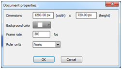
Vectorian Giotto never asks you to save your work, so make sure you save regularly as well as before closing.
- Go to File > Save.
Since Vectorian Giotto doesn't have a workspace or something, you will have to keep it tidy yourself.
- Make a folder "Giotto workspace" .
- In that folder add another folder called "TutorialProject".
- In that folder save your file as "TutorialButton".
At the top of the screen you will find the timeline. It is smart to keep the background and the components separate, on different layers.
- Double click on the existing layer, Layer1.
- Rename it to something like "Background", or "BG".
- Right click on the layer, and add a new layer.
- Rename this one to "Components".
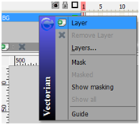 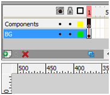
Creating the Graphical User Interface
Creating the Button
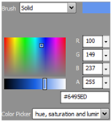
- On the right, select a color of your choice from the color palette, and on the left select the Rectangle Tool
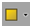
- Make sure the component layer is selected at the top.
- Draw a box on the canvas which will represent the button.
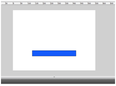
- Select the Text Tool
on the left, and again, pick a color on the right. - Click on the button and type some text.
- Click on the Selection Tool
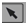
Now we are going to turn this shape with text into a button.
- Right click on the rectangle you have just drawn, and select "Convert to symbol".
- Give it a name, e.g. "TestButton".
- Make sure to select Button, not movieclip, and click on "OK".
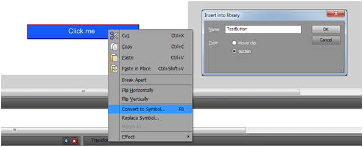
Now the shape has been replaced with your button. If you double click on it you will zoom in on it, the timeline will change and we can edit the buttons properties.
It now has four states:
State | Description |
|---|---|
Up | Mouse is not on the button |
Over | Mouse is on the button (not clicking anything) |
Down | Button is pressed (mouse button pressed) |
Hit | Button is hit (mouse released after press) |
- Right click on the second frame ("Over") > Insert keyframe.
- Do this for the other states as well.
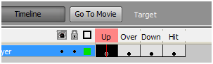
Now we can change the appearance of the button in different states.
- Go to the Over state and move the color slider around, you could choose to just change the brightness. Do the same for the Down and Hit state.
- Click on "Go To Movie" to return to your scene, otherwise everything you will do next will be done inside the button instead of in the scene.
Creating the MessageBox
Now we will add some text to our scene which we can edit in real-time later.
- Select the Text Tool
on the left. - Pick a color on the right. Make sure not to pick black. The UI emulator which we will use later has a black background, so for testing purposes it is easier to choose red for example
- Draw a text field.
Your scene should look something like this: 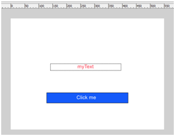
Exporting the UI
Now, since we want to use the button and the text field in script, we will give them a sensible name.
- Click on the button and give it a name.
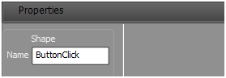
- Do the same for the textbox in the middle.
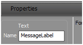
Also, because we are using fonts, we need to embed them in the SWF file.
To do this use the Selection Tool, and click on the MessageBox in the middle.
At the bottom in the properties:
- Set its type to dynamic.
- Click on the "sel" button, this will make sure the text cannot be selected during run-time.
- Set the button's alignment to be in the center.
- Click on "Embed...".
- Select all the four lines and click on "OK". This will make sure that the font is included in the SWF and thus can be rendered.
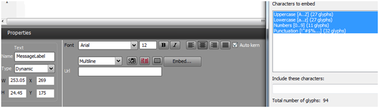
- Save your file again.
- Go to File > export Flash movie.
- And export it to the same folder. It will ask you to compress the movie, do not check the box and just click on "OK".
Now you should have the following files in your project folder:
- TutorialButton.vgd
- TutorialButton.swf
The SWF file currently contains only the graphical part of the UI, in the next part you will be creating the code to support it.
Making the User Interface Interactive
Setting Up the Project
- Open up FlashDevelop and go to: Project > New project.
- Under ActionScript 2, Select Empty project. If the AS2 templates are missing please get the templates from here.
- Give the project a name, e.g. "TutorialProject".
- Go to "Browse".
- Find your project folder.
- Click on "make new folder".
- Name it "code".
- Click on "OK".
- Click on "OK" again to create your project.
This will place the code in a folder next to the SWF, nice and tidy.
Now on the right you will see your project is created (TutorialProject(AS2)).
- Right click on it, and choose Add > New Class.
- Give it a name (ButtonTestClass for example).
- Click on "OK".
Now we have a project and a class which we will use to hook Flash up to CRYENGINE via Scaleform. 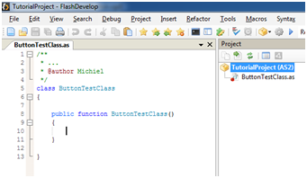
- Right click on the class and select Always Compile. This will make sure it compiles the class when you run the project.
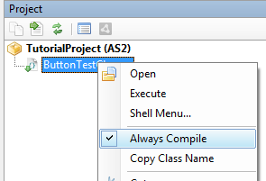
Let's look at the project properties.
- Right click on your project, and go to Properties.
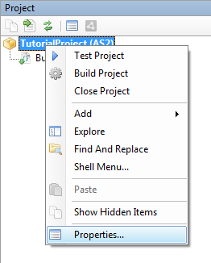
Here you will see 5 tabs, we will be editing only 2.
- First, the "Output" tab, this tab will hold all the info about the new exported file.
- Make sure the Platform is on Flash Player and version 8.0.
- The compilation target can stay on "Application".
- Click on browse and locate the folder with the SWF but make sure to give it a different name e.g "TutorialButtonInjected.swf". This gives a clear difference between the graphic SWF and the injected one.
- Set the dimensions and the frame rate to the same values as in your Vectorian Giotto project, 1280 x 720, 30 fps.
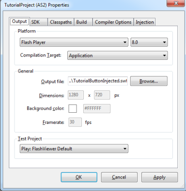
- Go to the "Injection" tab. This one holds the settings which are used to inject our ActionScript code into the graphical SWF file.
- Tick the "Enable Code Injection" checkbox.
- In the Input SWF file box, locate your UI file we have just created with Vectorian Giotto (TutorialButton.swf).
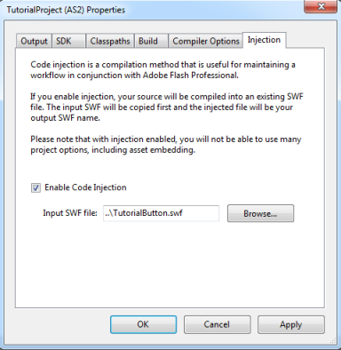
Adding the ActionScript
Now the project is ready to inject your ActionScript into the SWF file.
This file needs an entry point which looks like this:
static var ButtonTest:ButtonTestClass;
public static function main(mc:MovieClip):Void
{
ButtonTest = new ButtonTestClass();
}
This piece of code is executed in the beginning, it instantiates the ButtonTestClass and stores it in ButtonTest.
This means the constructor is called, and that is where we will put everything we need to initialize.
In the constructor the following code will deal with a buttonpress:
public function ButtonTestClass()
{
_root.ButtonClick.onPress = function()
{
fscommand("ButtonClickPressed");
}
}
This overwrites the onPress function for the button with our own. Notice the "_root.ButtonClick". This is the path to the object, it will always start with _root, and then with whatever you named your button.
"fscommand" lets the Flash object communicate with its owner, in our case the Scaleform inside the engine. This command is used to send an event to CRYENGINE which you can catch in Flow Graph and process (this process will be explained later).
And finally, let's add a function to the constructor that can alter the text in the MessageBox for us:
_root.MessageLabel.ChangeMessage = function(message:String)
{
_root.MessageLabel.text = message;
}
Here again, note the "_root.MessageLabel".
Here is the full code for the ActionScript file:
class ButtonTestClass
{
static var ButtonTest:ButtonTestClass;
public static function main(mc:MovieClip):Void
{
ButtonTest = new ButtonTestClass();
}
public function ButtonTestClass()
{
_root.ButtonClick.onPress = function()
{
fscommand("ButtonClickPressed");
}
_root.MessageLabel.ChangeMessage = function(message:String)
{
_root.MessageLabel.text = message;
}
}
}
Exporting the Injected Movie to the Game
- Save your file.
- Project > Build Project.
This will inject the code into the given SWF file, and save it to the output file. If you want to run your project you can go to: Project > test project
It won't do much at this point because clicking the button will only generate an event that needs to be processed, but you can see how your UI looks like and if it runs without errors.
Now we are going to get our UI to run in a game.
- Go to your project folder.
- Copy the TutorialButtonInjected.swf.
- Paste it in:
<GameFolder>\Libs\UI. - Drag and drop the .swf file onto the converter tool located in:
<root>\Tools\gfxexport.exe.- This will then create a proper GFx file for the engine to use.
Now in order for the engine to read it, it will need a UI element, which is stored in an XML file.
- Open up Notepad++.
- Paste the following code in the file:
<!-- Category name, of your own choosing -->
<UIElements name="TutorialHUD">
<!-- Object name, again, of your own choosing -->
<UIElement name="TutorialButton" render_lockless="1">
<!-- Point it to the correct files and give it some default settings -->
<GFx file="TutorialButtonInjected.gfx" layer="0">
<Constraints>
<Align mode="dynamic" valign="center" halign="center" scale="0" max="0" />
</Constraints>
</GFx>
<!-- Map the function to change the message in the box -->
<functions>
<function name="ChangeMessage" funcname="MessageLabel.ChangeMessage">
<param name="message" desc="" type="String"/>
</function>
</functions>
<!-- Here we will define the event that the buttonClick will generate -->
<events>
<event name="OnClick" fscommand="ButtonClickPressed" desc="" />
</events>
</UIElement>
</UIElements>- Save it as:
<sdk_root>\GameSDK\Libs\UI\UIElements\TutorialButton.xml
Setting Up the UI Inside CRYENGINE
Test the UI in the UI Emulator
You can actually test your UI before dropping it in game with the help of the UI Emulator. To do this, go to: View > Open View Pane > UI Emulator
Under "Elements" there is a list of different UIs, yours should be listed among them.
- Click on your UI.
- Open up the properties below.
- Set the property "visible" to true.
Now you should see your UI in the emulator window.
- Open up "Flags".
- Set the property "Mouse Events" to true.
Now the UI will accept mouse events and the button will react to your mouse in the previewer.
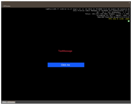
You can even test the function you've just made and added.
- Open up "Functions".
- Double click on "ChangeMessage".
- You can change the "message" parameter and click on call to see if it works.
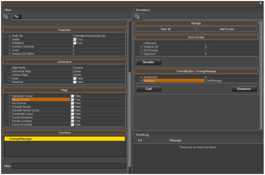
If you have no background in your UI and the text is black, you won't be able to read it since the UI emulator's background is black as well. So for testing purposes it is wise to add a background, or use colored elements.
Use FlowGraph to Display your UI in Game
The FlowGraph For Displaying the UI
The last step is to get it actually running in your level and have the button responding to your clicks.
- Go to File > New.
- Give it a name and click on "OK".
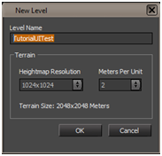
We don't need to bother with adding anything to the level, the water will be fine for now.
- Open the flowgraph editor by clicking the FG button (or View > Open view pane > FlowGraph).
- File > New UI Action, give it a name.
- Optional: You can now move the UI action by right clicking and selecting change folder if you want to.
Now there is a blank sheet showing, your empty FlowGraph. Let's add nodes to start, end and configure the UI.
- Right click and go to Add Start Node.
- Right click and go to Add node -> UI -> Display -> Config.
- Right click and go to Add node -> UI -> Display -> Constraints.
- Right click and go to Add node -> UI -> Display -> Display.
In the three UI nodes:
- Double click on "Element".
- Click on "...".
- Select your UI element from the list.
Now set the following flags to true:
In Config:
- Cursor
- MouseEvents
In Constraints:
- Scale
Now link all the FlowGraph nodes together as shown below.
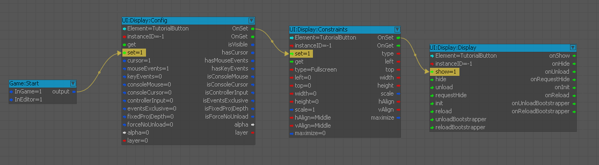
The FlowGraph for Handling Events and Functions
Let's add the events and functions to FlowGraph as mentioned earlier.
Add the event we defined:
- Right Click, Add node, UI, Events, TutorialButton, OnClick.
Add the function we made:
- Right Click, Add node, UI, Functions, TutorialButton, ChangeMessage.
- Now simply link OnClicks' "onEvent" to ChangeMessage's "Call" and give the message parameter a value by double clicking on it.
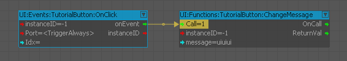
- Click on your main viewport.
- Press Ctrl+G to enter the game.
You should have a UI now which responds when you click on the button. The result might be skewed due to your viewport settings, in the emulator you can view it at different resolutions and see an accurate result.
Tips and Tricks
FlashDevelop
- Use the Prebuild and Postbuild commands to speed up the development process.
- You can set the output path directly to the folder:
<GameFolder>/Libs/UI. This saves you another step in the development process. - You can swap out Vectorian Giotto for different visual SWF editors if you prefer another one.